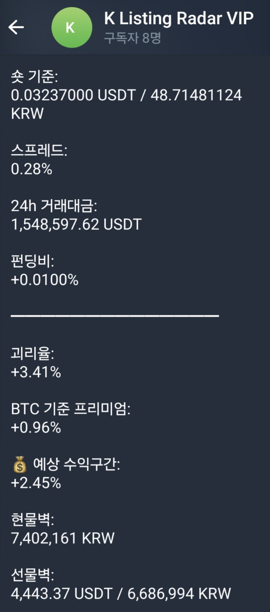
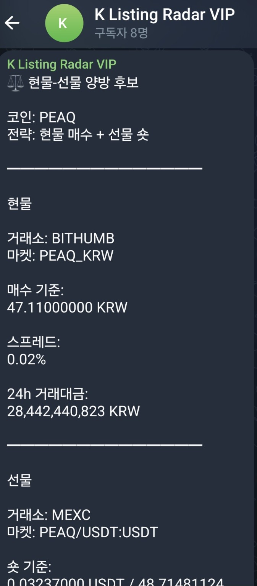
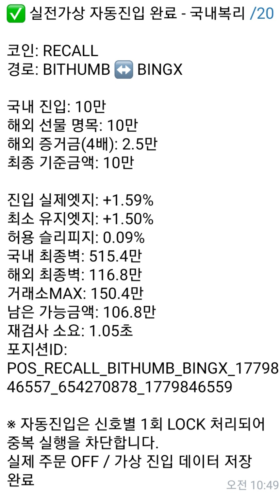

봇 검색
텔레그램에서 @Kedge0203bot 검색
K-EDGE AUTO GUIDE
국내 현물 ↔ 해외 선물 괴리차 감지부터 자동 진입, 자동 청산, 텔레그램 결과 알림까지 한 번에 이해할 수 있도록 정리했습니다.
텔레그램에서 @Kedge0203bot 검색 후 /start를 먼저 입력해야 자동 진입/청산 결과 알림을 개인 DM으로 받을 수 있습니다.
K-EDGE AUTO는 사용자가 직접 버튼을 눌러 진입하는 방식이 아니라, 설정과 승인이 완료되면 봇이 조건을 감시하고 자동으로 진입/청산하는 구조입니다.
텔레그램에서 @Kedge0203bot 검색
개인 DM 연결을 활성화합니다.
홈페이지에서 API와 정보를 등록합니다.
승인 완료 후 봇이 자동으로 시장을 감시합니다.
아래 화면은 실제 유료방 양방 알림 예시입니다. 알림은 단순 가격 차이가 아니라 BTC 기준 프리미엄을 제거한 실제엣지와 실체결 가능 금액을 중심으로 봅니다.

유료방 알림 전체 화면

괴리율·BTC 프리미엄·예상구간

실체결 가능금액·레버리지·주의사항
시장 전체 프리미엄입니다. BTC가 이미 +1% 비싸다면, 코인 +3% 중 1%는 시장 영향으로 봅니다.
해당 코인의 국내 현물과 해외 선물 사이의 가격 차이입니다.
코인 괴리에서 BTC 기준 프리미엄을 뺀 값입니다. K-EDGE는 이 값을 기준으로 판단합니다.
수수료·슬리피지·시장 변동을 감안한 유동적 예상 구간입니다. 확정 수익이 아닙니다.
현재 가격 주변에 쌓인 매수·매도 물량입니다. 실제로 진입 가능한 금액을 판단하는 기준입니다.
현물벽, 선물벽, 거래소 최대 진입금액, 남은 가능금액 중 가장 작은 값입니다.
선물 숏 포지션을 유지할 때 발생하는 비용 또는 수령 금액입니다. 음수는 비용 차감, 양수는 수령 가능성을 의미합니다.
거래소가 해당 코인 선물 포지션에 허용하는 최대 진입 한도입니다.
AUTO 서비스는 조건이 충족되면 봇이 국내 현물과 해외 선물을 동시에 계산해 자동 진입합니다. 진입 후에는 아래와 같은 완료 알림이 텔레그램으로 전송됩니다.

실전가상 자동진입 완료 알림 예시
자동진입은 신호별 1회 LOCK 처리되어 같은 신호가 중복 실행되지 않도록 차단합니다.
K-EDGE AUTO는 알림이 떴다고 무조건 진입하지 않습니다. 자동 진입 시점에 조건을 다시 검사하고, 기준 미달이면 진입하지 않습니다.
익절은 유연하게 처리합니다. 실제엣지가 +0.5% ~ +0.3% 구간으로 회귀하면 청산을 시도합니다.
| 구간 | 동작 |
|---|---|
| 진입엣지 +4% | 1차 경고 |
| 진입엣지 +6% | 2차 강경고 |
| 진입엣지 +8% | 손절 감시 시작 |
| +8% 이상 15분 유지 | 자동손절 |
| 15분 안에 회귀 | 생존 / 감시 해제 |
거래소 API 생성 시 출금 권한은 절대 켜지 않습니다.
AUTO 서비스는 국내 현물 매수/매도, 해외 선물 진입/청산 권한만 사용합니다.
VPS 운영 시 지정 IP만 API 사용 가능하게 제한하는 것을 권장합니다.
가이드를 확인했다면 등록 페이지에서 AUTO 서비스를 신청할 수 있습니다.
자동 신청하기